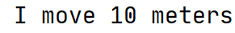

Java Programmeren
Les 2 - Relaties en Overerving
Inhoud
- Huiswerkopdrachten
- Gemiste stof vorige week
- Collecties
- For-lus
- Relaties
- Overerving & Abstractie
- H & H
- Webcam aan
- Microfoon uit wanneer anderen spreken
- Gaarne hand opsteken
Huiswerk opdrachten
30 minuten bespreken. Welke?
Collecties
Het opslaan van meerdere waardes in één variabele.
Collecties
- Nu alleen de ArrayList.
- Boek heeft voorbeelden voor Array en HashMap.
- Zijn er nog veel meer.
ArrayList - Het begin
import java.util.ArrayList;
import java.util.List;
public class MainListExample {
public static void main(String[] args) {
List<String> carBrands = new ArrayList<>();
}
}
ArrayList - Toevoegen
List<String> carBrands = new ArrayList<>();
carBrands.add("Volkswagen");
carBrands.add("DAF");
carBrands.add("Tesla");
carBrands.add("Fiat");
ArrayList - Lezen, updaten en verwijderen
List<String> carBrands = new ArrayList<>();
carBrands.add("Volkswagen");
System.out.println(carBrands.get(0));
carBrands.set(0, "Porsche");
carBrands.remove(0);
ArrayList - Leegmaken
List<String> carBrands = new ArrayList<>();
carBrands.add("Volkswagen");
System.out.println("De grootte: " + carBrands.size());
carBrands.clear();
System.out.println("De grootte: " + carBrands.size());
Nog even dit
Een List en Map kunnen oneindig groot worden. Een Array heeft een vooraf ingestelde grootte.
For lus
String[] cities = {"Zeist", "Burg-Haamstede",
"Den Dolder", "Soest"};
for(String city : cities) {
System.out.println(city);
}
for(int i = 0; i < cities.length; i++) {
System.out.println(cities[i]
+ "staat op positie: " + i);
}
Relaties
- Kardinaliteit
- Compositie en aggregatie
- Unidirectioneel en bidirectioneel
- Voorbeelden
Een relatie in Java is dat het ene object 0 of meerdere van het andere object kan bevatten. Dit noemen we ook wel een has-a relatie.
Kardinaliteit
- 0 tot 1 relatie
- 1 tot 1 relatie
- 0 tot N relatie
- 1 tot N relatie
- N tot N relatie
Standaard 0, 1 of oneindig!
Compositie & Aggregatie
- Aggregatie: geen eigenaarschap
- Aggregatie: objecten kunnen los van elkaar bestaan
- Compositie: wanneer het object met eigenaarschap wordt verwijderd, verdwijnen de relatie-objecten ook.
Uni- vs. bidirectioneel
- Uitgangspunt is om relaties unidirectioneel te houden.
- Bidirectionele relaties verhogen complexiteit
- Je kunt de objecten namelijk niet tegelijk maken, want de ene heeft de ander nodig.
- Wat doe je als de relatie (aan 1 kant) niet aanwezig is?
Voorbeeld 0 tot 1
public class Person {
private Address address;
public Address getAddress() {
return address;
}
public void setAddress(Address address) {
this.address = address;
}
}
Voorbeeld 1 tot 1
public class Person {
private Address address;
public Person(Address address) {
this.address = address;
}
// Getters & Setters weggelaten
}
Voorbeeld 0 tot N
import java.util.ArrayList;
import java.util.List;
public class Company {
private List<Person> employees;
public Company() {
this.employees = new ArrayList<>();
}
public void addEmployee(Person employee) {
employees.add(employee);
}
}
Voorbeeld 1 tot N (1)
import java.util.ArrayList;
import java.util.List;
public class Company {
private List<Person> employees;
public Company(Person employee) {
this.employees = new ArrayList<>();
employees.add(employee);
}
public void addEmployee(Person employee) {
employees.add(employee);
}
}
Voorbeeld 1 tot N (2.1)
import java.util.ArrayList;
import java.util.List;
public class Company {
private List<Person> employees;
public Company(List<Person> employees) {
this.employees = employees;
}
//addEmployee weggelaten
}
Voorbeeld 1 tot N (2.2)
import java.util.ArrayList;
import java.util.List;
public class Company {
private List<Person> employees;
public Company(List<Person> employees) {
if(employees.size() > 1) {
this.employees = employees;
} else {
System.out.println("Gooi een error.");
}
}
//addEmployee weggelaten
}
Voorbeeld N tot N
public class Company {
private List<Person> employees;
}
public class Person {
private List<Company> companies;
}
Aan de slag
- Kies een breakout-room
- Bootcampers kunnen eigen studiegroep gebruiken
- Maak relatie-opdracht 1 & 2
- Backend -> Algemeen/General -> Bestanden/Files ->
- lesmateriaal -> Java Programmeren -> Les 02 ->
- JavaProgrammeren02Opdrachten-master.zip
Opdracht bespreken
Overerving & Abstractie
- Super- en subklassen
- Override
- Werken met super()
Overerving
In Java kun een klasse extenden. Hierdoor erft de onderliggende de eigenschappen van de superklasse. Dit kun je doen als je de klassen een is-a relatie hebben.
Voorbeeld superklasse
public class Vehicle {
private String licensePlate;
public String getLicensePlate() {
return licensePlate;
}
public void setLicensePlate(String licensePlate) {
this.licensePlate = licensePlate;
}
public void move() {
System.out.println("I move 10 meters");
}
}
Voorbeeld subklasse
public class Bus extends Vehicle {
public int amountOfPassengers;
public int getAmountOfPassengers() {
return amountOfPassengers;
}
public void setAmountOfPassengers(int amountOfPassengers) {
this.amountOfPassengers = amountOfPassengers;
}
}
Voorbeeld gebruik methode superklasse
public class MainBus {
public static void main(String[] args) {
Bus connexion = new Bus();
connexion.move();
}
}
OUTPUT
Override
Wat nou als een bus niet 10 meter moet bewegen, maar 20 meter?
Dan gebruiken we @Override
Override - move
public class Bus extends Vehicle {
public int amountOfPassengers;
// Getters en setters even weggelaten.
@Override
public void move() {
System.out.println("I move 20 meters");
}
}
public class MainBus {
public static void main(String[] args) {
Bus connexion = new Bus();
connexion.move();
}
}
OUTPUT

Dus:
Override gebruik je als je de inhoud van de methode wilt overschrijven.
Super
- Wat als je een methode niet wilt overschrijven, maar deze wilt uitbreiden?
- Dan gebruiken we super()!
- Stel dat we willen zeggen: I move 10 meters and I used 1 ltr of fuel.
- Dan willen we de code niet overschrijven, maar gebruiken én uitbreiden.
Super() voorbeeld
public class Bus extends Vehicle {
public int amountOfPassengers;
// Getters en setters weggelaten
@Override
public void move() {
super.move();
System.out.println("And I used 1 ltr of fuel.");
}
}
Super() - nieuwe output
public class MainBus {
public static void main(String[] args) {
Bus connexion = new Bus();
connexion.move();
}
}
OUTPUT

Nog een paar dingen
- Je kunt een klasse extenden, die een andere klasse extend
- Extend alleen als je is-a over de relatie kunt zeggen
- Je kunt altijd maar 1 klasse extenden
Aan de slag
- Kies een breakout-room
- Bootcampers kunnen eigen studiegroep gebruiken
- Maak inheritance-opdracht 1
- Backend -> Algemeen/General -> Bestanden/Files ->
- lesmateriaal -> Java Programmeren -> Les 02 ->
- JavaProgrammeren02Opdrachten-master.zip
H & H
- Huiswerk:
- Lees H3 & H4.
- Maak de lesopdrachten af
- Maak de huiswerkopdrachten (zelfde zip-bestand)
- Installeer git (als je Windows hebt)
- Huishoudelijk:
- Morgen 0900-1200 vragenuur.
- Op locatie? Schrijf je in!
- Vul de poll even in!
- Overige onderwerpen op EdHub